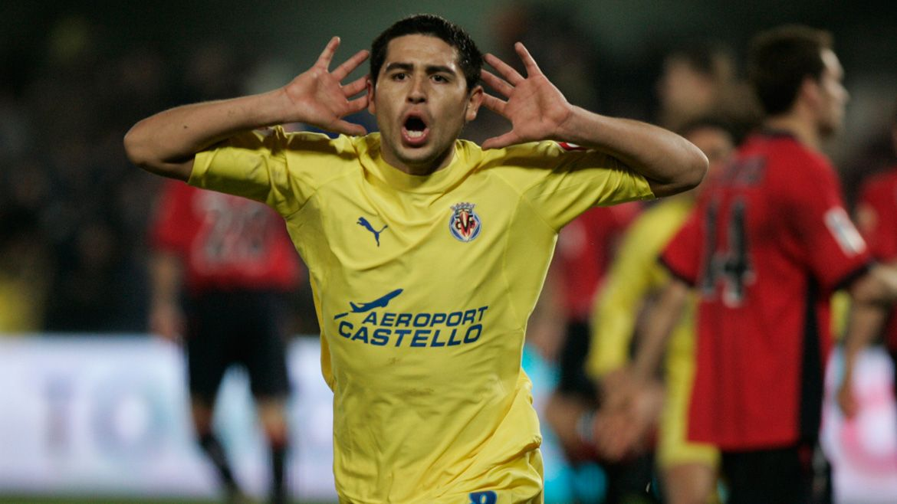
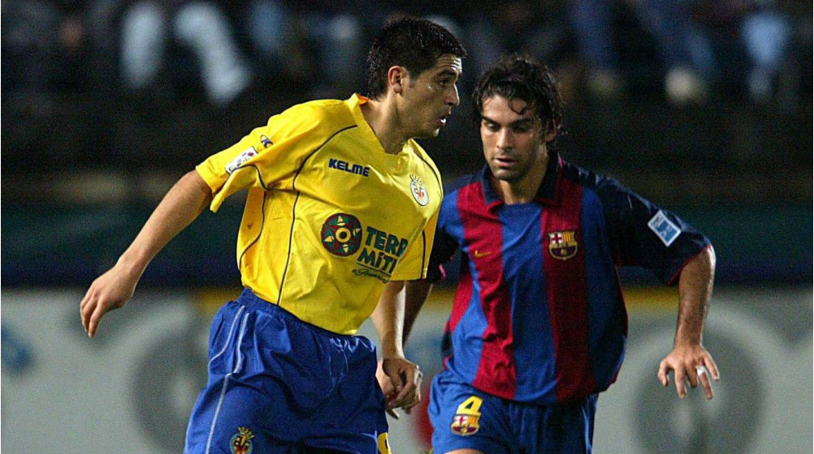

El mago que enamoro Europa
al Fútbol Club Barcelona por una cifra que rondó los trece millones de dólares y por cinco temporadas. Riquelme fue presentado el 15 de julio de 2002, con un recibimiento de 500 aficionados unos días anteriores en su llegada al aeropuerto de Barcelona. Tras el chequeo médico, las fotos en el estadio y la conferencia de prensa, Román tuvo su primer encuentro con el entrenador del equipo, Louis Van Gaal. Años después, en una entrevista, Riquelme contó su primera conversación con el entrenador neerlandés. Van Gaal lo llevó a una habitación llena de vídeos del jugador en su etapa en Boca Juniors y le dijo que no iba a contar con él para el resto de la temporada.

Luego de confirmarse que Riquelme no iba a continuar con el conjunto azulgrana para la temporada 2003-04, Román y el club empezaron a buscar posibles salidas; el argentino intentó regresar a Boca, pero el Barcelona se lo negó rotundamente, ya que el nuevo entrenador del conjunto culé, Frank Rijkaard propuso cederlo en España para que logre adaptarse al fútbol europeo de forma definitiva. Tanto el Mallorca F. C. como el Real Murcia mostraron interés en el enganche, pero el Villarreal, que ya había contado con ex-Boca como Martín Palermo y Diego Cagna, acabó fichando a Riquelme en agosto de 2003. El factor clave fue que el submarino amarillo había clasificado para la Copa UEFA la temporada pasada y Román pidió exclusivamente ser traspasado a un equipo que compita en Europa. Riquelme debutó oficialmente el 2 de septiembre de 2003 por la segunda fecha de la Liga ante el Real Madrid en un empate 1-1 en el Madrigal. En el conjunto «submarino» recuperaría su mejor nivel y se adaptaría perfectamente al pequeño club español, llevándolo a un octavo puesto en el campeonato liguero y a las semifinales de la Copa UEFA, donde serían eliminados por el Valencia. A final de temporada, Riquelme obtendría su primer y único título en su etapa en Europa al ganar la Copa Intertoto al Atlético de Madrid.
En la temporada 2004-05 Riquelme formó una recordada dupla de ataque junto con el uruguayo Diego Forlán, proveniente del Manchester United. Conducidos técnicamente por el chileno Manuel Pellegrini, el Villarreal logró una histórica tercera posición en la liga, solo por detrás del Barcelona y el Real Madrid. A Riquelme le fue concedido el Premio Don Balón al mejor jugador extranjero de La Liga en esa campaña además de ser el máximo asistente de la competición.51 Ese año, Riquelme debía retornar a Barcelona pero el conjunto castellonense decidió comprar el 75% de su pase por cuatro temporadas y 7 millones de euros. Durante esta temporada se destaca una victoria del Villarreal sobre él Barça en el que Riquelme fue la figura del partido con dos asistencias, y retirándose ovacionado por el estadio entero sobre el final del partido, con varios medios y aficionados considerando la actuación de Riquelme como una "venganza" hacia los catalanes por haberlo desperdiciado. En el último partido disputado por Zidane jugando para el Real Madrid contra el Villarreal, el francés intercambió su última camiseta con Riquelme, un hecho que dio de qué hablar en España y en el resto del mundo. Durante la temporada 2005-06 en la localidad de Villarreal se respiraba un ambiente de confianza, con toda la ciudad expectante de la primera participación en su historia en la Liga de Campeones de la UEFA. Riquelme fue clave, su actuación en la competición fue sorprendente; llevó al equipo a las semifinales En el partido de vuelta, Riquelme tuvo la oportunidad de lograr el empate a través de un penalti cobrado en el último minuto, que los hubiera llevado a la prórroga y con chances de llegar a la final. Sin embargo, su disparo fue contenido por Jens Lehmann, dejando fuera de la copa al Villarreal. Para el comienzo de la próxima temporada y tras su buen Mundial, Riquelme ya no sentía las mismas fuerzas para seguir jugando para el submarino amarillo. Sus constantes discusiones con la directiva del conjunto español, y el quiebre de su relación con Pellegrini tras no acordar su regreso a los entrenamientos, provocó que tras apenas disputar 13 partidos en liga, Román fuera apartado del primer equipo y fuera reemplazado por el mediocampista chileno Matías Fernández, concluyendo en eventualmente su salida del club en febrero de 2007.
